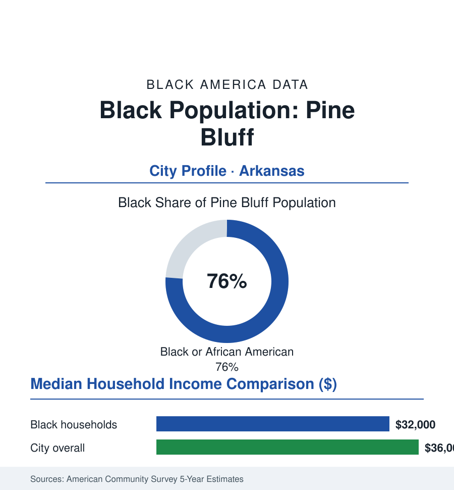

Black Cities
Black Pine Bluff: 31,000 People in One of America's Blackest Cities
Pine Bluff's Black community, about 31,000 and three-quarters of the city, holds an HBCU, a Delta farming heritage, and one of the starkest decline-and-endurance files in the South. The census portrait.

Pine Bluff's Black community numbers approximately 31,000 people — about 76% of the city's 41,000 residents — one of the highest Black shares of any city in America, in a Delta river town whose story compresses the region's whole arc: cotton wealth and a great Black commercial district, an HBCU founded in the 1870s, industrial decades, and a long, hard population decline that the community remaining has answered with an unusually complete hold on its own institutions. This profile reads the Delta city's numbers.
Cotton, the River, and the Commercial District
Pine Bluff grew on the Arkansas River's cotton trade — Jefferson County's plantations among the Delta's richest, the town their shipping point — and its Black majority is older than the city itself in the county data. The community's golden-age record is Main Street's Black commercial district: the banks, theaters, professional offices, and the Mosaic Templars' Arkansas world (the fraternal empire headquartered upriver in Little Rock, its Pine Bluff presence in the record), the churches of the first rank, and the social architecture of a Black-majority town inside a Jim Crow state — a duality the historians mark: Pine Bluff's Black residents held local demographic weight that translated, across the twentieth century, into earlier and stronger political organization than the Delta's norm. The Arkansas Agricultural, Mechanical and Normal College — today's University of Arkansas at Pine Bluff, founded 1873, the state's public HBCU and the 1890 land-grant — anchored the town's Black professional class from the start: the teachers, extension agents, and farmers' conferences of the land-grant mission written into the Delta's agricultural record (the school's aquaculture and agriculture programs still the region's research arm in the current catalog).
The Decline Ledger and the Institutions That Hold
The city's modern data are among the hardest in this atlas: the population from 57,000 in the late twentieth century to 41,000 today (the farm mechanization and the industrial losses — the paper mill and arsenal economy's contractions — compounded by the metro pull of Little Rock forty miles up the interstate), poverty in the high twenties, the commercial district's hollowing in the downtown data. Against the ledger stands the institutional completeness the majority built: the mayor's office and city government Black-led across the modern era (the city's first Black mayor elected in the 1980s in the state record, the office and council substantially the community's since), the school district its own (a district over ninety percent Black, its consolidation and state-oversight chapters of the recent record fought in public), the county's politics, and UAPB as the largest single institution in the city's life (its enrollment in the thousands, its Golden Lions in the SWAC, its homecoming the region's reunion, its workforce and cultural gravity the town's). The church map and the funeral-home and small-business record of the business file complete a civic structure that governs nearly everything local there is to govern — the file's sovereignty data at the Delta's maximum, against an economy that gives the sovereignty very little to spend.
The Economic Ledger
The ACS numbers are Delta numbers: Black median household income in the low thirty-thousands, the city median not far above it; homeownership around the middle ranges on some of the cheapest housing stock in America (the five-figure medians of the assessor's data — equity thin, entry easy, the heirs'-property file thick on the county's farm edges); the workforce in the current record: UAPB and the schools, the hospital (Jefferson Regional), the public sector at every level, the Tyson and Evergreen packaging plants' shifts, the arsenal's remnant contracts, the casino payroll of the recent addition (Saracen's gaming floor the county's newest large employer), and the farm economy mechanized to a fraction of its old hands. The reinvestment file is correspondingly grassroots in scale: the downtown plans, the Delta Rivers nature and the bayou as amenity arguments, the small-business funds and the HBCU-anchored development corporations — the community's organizations bidding, project by project, for the population curve to bend, the state and philanthropic Delta programs (the Delta Regional Authority's grants) in the supporting data.
Reading Pine Bluff's Numbers
Seventy-six percent: Pine Bluff is the limiting case of this section's Delta file — a Black city in full, older than its own incorporation in its majority, governing itself entire on an economy the century kept taking. The data on what remains are not a mystery: a university, a government, a church map, and 31,000 people who are, demographically and institutionally, the place itself. Whatever the Delta's next chapter is, it will be written here by the people the census counts.
More in Black Cities
Black Atlanta: Population, Distribution, and Growth of a Black Metropolis
Metro Atlanta holds more than two million Black residents — roughly one in three, second only to New York. The suburban distribution, migration history, and composition of Black Atlanta in the census data.
Black New York: The Largest Black Population in America
The New York metropolitan area holds about 3.4 million Black residents — more than any metro in the nation — and the city itself about two million. The census profile.
Black Washington: The District and the Metro
The Washington metro holds about 1.6 million Black residents, and the District itself — long a majority-Black city — now records a Black share near 41 percent. The census profile.
Source: U.S. Census Bureau, 2020 Census and American Community Survey 5-year estimates; City of Pine Bluff; University of Arkansas at Pine Bluff and Arkansas State Archives records.